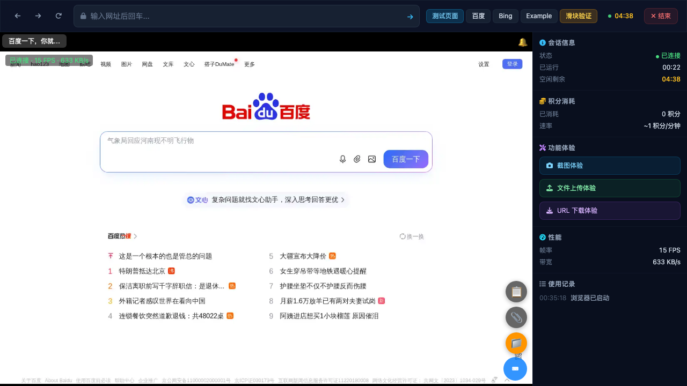
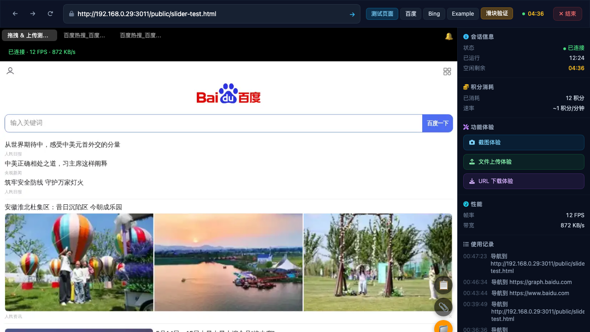
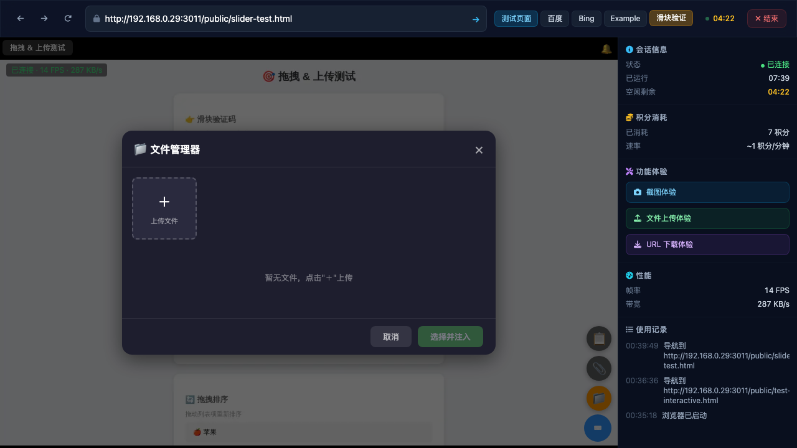
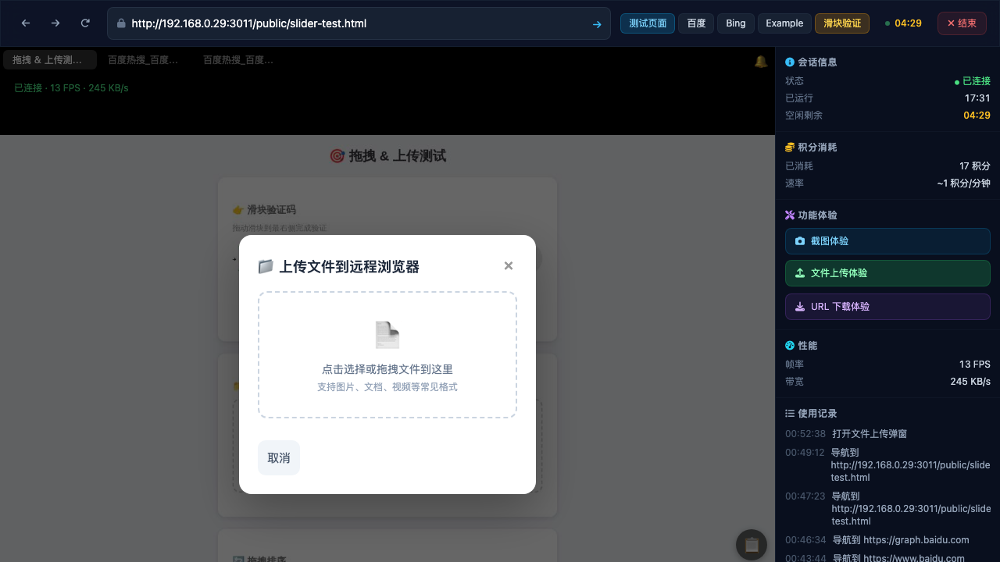
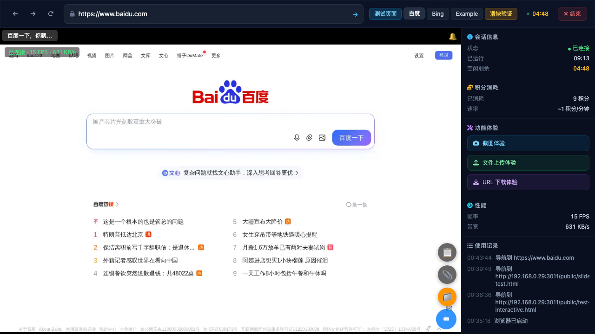
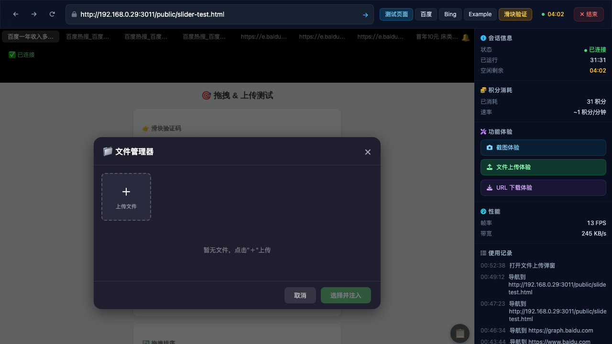

Navigated to http://192.168.0.29:3011/demo. Landing page loaded with "开始体验" button.
Clicked "开始体验", session started after ~15 seconds. Remote browser viewer loaded with Baidu homepage visible via streaming IMG element.

Clicked "滑块验证" preset button. Remote browser navigated to slider-test page with file upload area visible.

Clicked on the file upload dashed area inside the remote browser viewport. The "📁 文件管理器" modal appeared! It showed upload card with "+" button, "暂无文件，点击"＋"上传" text, and "取消"/"选择并注入" buttons.
⚠️ Note: Subsequent attempts to reproduce this click failed. The viewer's WebSocket disconnected during the session (state changed to CLOSED=3), and after reconnection the file chooser event was not triggered again by synthetic click events. The click events ARE being forwarded via WebSocket (verified via send interceptor), but the remote browser's Playwright instance didn't trigger the filechooser callback on subsequent attempts.

Clicked the "文件上传体验" button in the sidebar. This opened a different modal titled "上传文件到远程浏览器" with drag-and-drop upload area. This is NOT the same as the "📁 文件管理器" modal.

Clicked the 📁 floating button in the viewer's bottom-right toolbar. This opened the same "📁 文件管理器" modal with "取消" and "选择并注入" buttons. This is the SAME modal triggered by the filechooser event.
Attempted to click the camera icon on Baidu's search bar to trigger file chooser. The click coordinates were difficult to target precisely in the streaming remote browser. The synthetic click events didn't hit the camera icon accurately. This would work better with a real mouse interaction.

Flow: User clicks file input in remote browser
│
├─→ Viewer IMG element receives mousedown/mouseup/click
│ ├─ getCoords() converts screen coords → remote browser coords (1280x800)
│ └─ viewer.send({type:'event', event:{type:'click', data:{x,y}}}) via Events WebSocket
│
├─→ Server receives click event → forwards to Machine Service via gRPC
│
├─→ Machine Service's Playwright executes click at (x,y) in remote browser
│ └─ If click hits an <input type="file"> or element that triggers file chooser
│ └─ Playwright emits 'filechooser' event
│
├─→ Server detects filechooser event → sends {type:'filechooser'} to Viewer via Events WebSocket
│
└─→ Viewer receives 'filechooser' message → calls _showFileManager()
└─ Shows "📁 文件管理器" modal with upload/inject functionality
Three Ways to Open File Manager:
1. Click file input in remote browser → filechooser event → _showFileManager()
2. Click viewer toolbar 📁 button → _showFileManager() directly
3. Click sidebar "文件上传体验" → DIFFERENT modal ("上传文件到远程浏览器")
Key Viewer Elements:
- #browser-viewer-frame (iframe containing the viewer)
- #bv-screen (streaming IMG element showing remote browser)
- viewer.uploadBtn (📁 floating button, bottom-right)
- viewer global variable on iframe's contentWindow
- WebSocket: eventsWs (for mouse/keyboard events) + streamWs (for screenshots)
viewer.connect() restores the connection.<input type="file"> or an element that programmatically triggers one.